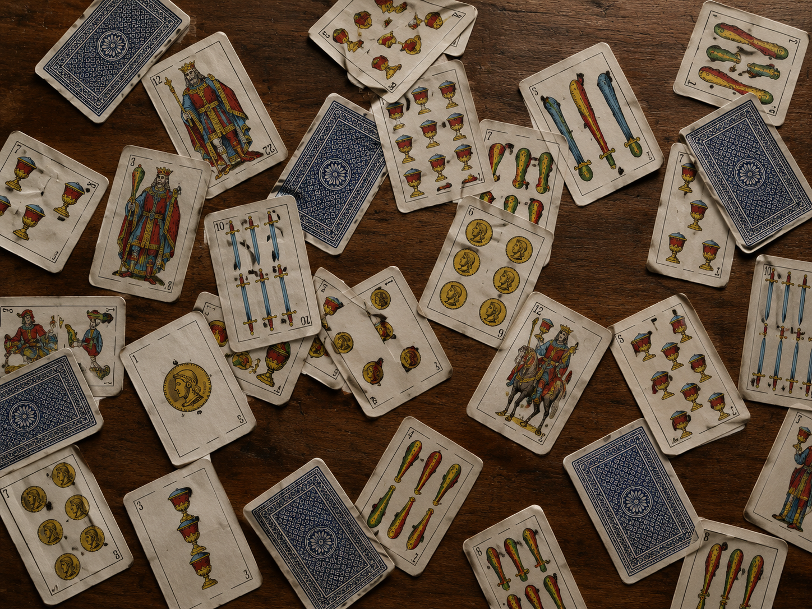
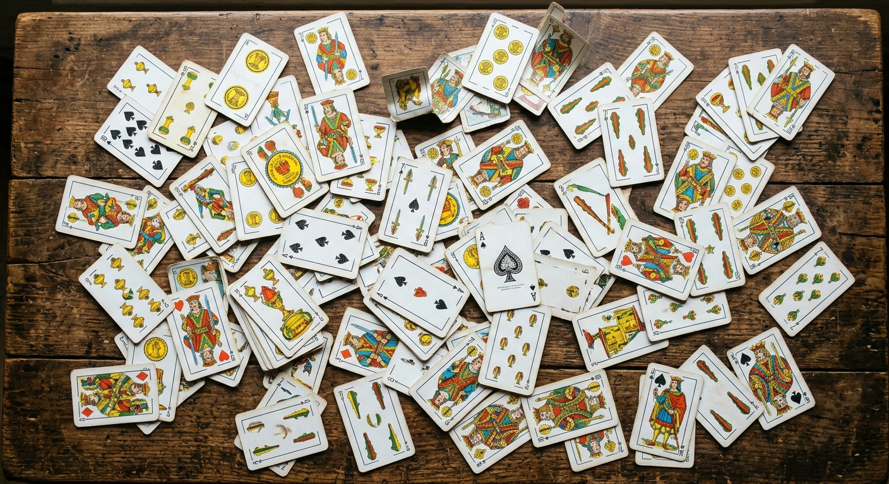

Es un juego de cartas de apuestas y engaño, muy popular en
Argentina. Se juega de a dos, cuatro o seis jugadores, en equipos, y gana el primero en
llegar a 30 puntos.
Lo clave no es tener buenas cartas, sino saber cuándo apostar y cuándo hacerle creer al
rival que tenés mejores cartas de las que tenés. Por eso se habla mucho en la mesa, con
apuestas como “truco” o “envido”, que el otro puede aceptar o rechazar.
No. También se juega en Uruguay, Paraguay, el sur de Brasil y
partes de Chile y Bolivia. Argentina es donde más fama tiene.
Su origen está en España, donde hay juegos parecidos como el “truc”. Llegó a América con
la colonización y cada región le fue sumando sus propias reglas y expresiones, así que
conviene aclarar las reglas antes de jugar con gente de otro lugar..
Se usa la baraja española de 40 cartas, con cuatro palos: oro,
copa, espada y basto. Cada palo tiene del 1 al 7 y las figuras 10, 11 y 12. Los 8 y los
9 se sacan.
Se usa porque el truco nació en España y llegó a América con esa baraja. Además, el
juego depende de ella: sus cartas más fuertes, como el 1 de espadas, y el envido, que
suma cartas del mismo palo, no se podrían jugar con una baraja francesa.


